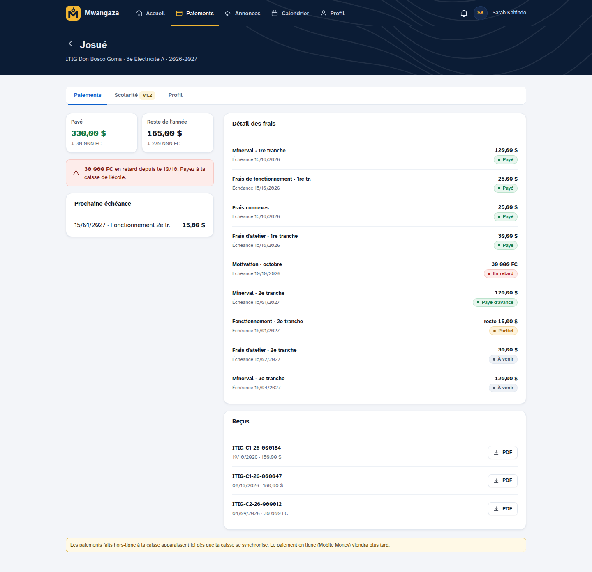

Toute l'école dans une application, même sans internet
Élèves, frais en dollars et en francs, caisse et reçus, impayés, notes et bulletins, et un espace pour les parents. La caisse continue quand internet coupe ; tout part dès que le réseau revient.


prefers-reduced-motion. Animation 2 — expliquer le hors-ligne sans texte : pastille « hors ligne » → « envoi » → « à jour », 9 s. Captures : make apercu sur les données de démonstration, en WebP 1 200 px ; la première en priorité haute, les autres en loading="lazy". Premier écran ≤ 150 Ko, lisible sans JavaScript.Fait pour les coupures, les deux devises et les parents occupés
La caisse ne s'arrête pas
Internet coupé ? La caissière encaisse et imprime le reçu. Les paiements partent seuls au retour du réseau, jamais en double.
Dollars et francs, sans mélange
Chaque frais a sa devise. Les montants ne sont jamais additionnés d'une devise à l'autre, et chaque paiement garde son taux.
Les parents sont prévenus
Sur leur téléphone, les parents voient les paiements, les reçus, les échéances et les annonces de chaque enfant.
.rv monte de 18 px et apparaît une fois en arrivant à l'écran (animation-timeline: view(), ou une dizaine de lignes d'IntersectionObserver) ; sans JavaScript ou avec prefers-reduced-motion, tout est visible d'emblée. Montants et taux : format de packages/money, exemple fictif.De l'ouverture de la caisse au tableau de bord du soir
- 07:30
La caisse ouvre
La caissière compte son fonds de caisse et ouvre sa session, sur l'ordinateur ou la tablette.
Caissière
- 08:10
Un parent paie la 2e tranche
En dollars ou en francs, en entier ou en partie : le reçu sort en quelques secondes, avec un code QR pour le vérifier.
Caissière - 08:11
Le parent le voit sur son téléphone
Le paiement et le reçu apparaissent dans l'espace parents, avec ce qui reste à payer.
Parent
- 11:00
Les points de la période
L'enseignant saisit les points de sa classe ; la moyenne, la place et la conduite se calculent seules pour le bulletin.
Enseignant
- 16:30
Clôture et tableau de bord
La caissière clôture avec l'écart éventuel ; le préfet voit les recettes du jour et les impayés de chaque classe.
Caissière, préfet
Chaque personne voit ce qui la concerne
L'école donne à chacun un rôle : direction, comptable, caissier, enseignant, secrétaire. Elle peut aussi créer ses propres rôles.
Direction
Recettes, impayés et caisses du jour, résultats des classes.
Voir
Comptable
Barèmes, tranches, réductions, annulations et clôtures.
Voir
Caissier
Encaisser et imprimer le reçu, même sans internet.
VoirEnseignant
Points, conduite et bulletins de sa classe.
VoirDes écoles qui l'utilisent chaque jour
Les données de l'école restent à l'école
Chaque école à part
Une école ne voit jamais les élèves, les paiements ni les notes d'une autre.
Double vérification pour l'argent
Direction, comptable et caissiers entrent avec un code en plus du mot de passe.
Un paiement ne s'efface jamais
Une erreur se corrige par une annulation, avec un motif et la validation d'un responsable.
Tout est noté
Paiements, notes et droits du personnel : chaque changement garde qui, quand et quoi.
Sauvegarde chaque nuit
Copie chiffrée de toutes les données, gardée hors du serveur.
Reçu vérifiable
Le code QR du reçu montre s'il est vrai, sans compte ni mot de passe.
Avec les écoles d'ici, pour elles
Mwangaza est conçu et suivi à Goma. On vous aide à démarrer : un espace d'essai avec vos classes et vos frais, l'import de votre liste d'élèves, la prise en main avec votre personnel.
- Une réponse sur WhatsApp, en français ou en anglais
- Un téléphone, une tablette ou un vieil ordinateur suffit
- Rien à installer depuis un magasin d'applications
Ce qu'on nous demande souvent
Mwangaza marche-t-il sans internet ?
Oui. Sur un appareil déjà connecté, la caisse, la recherche des élèves et l'impression des reçus continuent sans réseau. Les paiements partent seuls au retour de la connexion, jamais en double.
Faut-il installer quelque chose ?
Non. Mwangaza s'ouvre dans le navigateur (Chrome, Edge, Safari) et s'ajoute à l'écran d'accueil comme une application, sans magasin d'applications.
Les parents peuvent-ils suivre les paiements ?
Oui. Avec le code famille imprimé sur la fiche d'inscription, ils activent leur compte et voient les paiements, les reçus, les échéances et les annonces de chaque enfant.
Les frais en dollars et en francs sont-ils gérés ?
Oui. Chaque frais a sa devise, l'école fixe le taux de l'année, et chaque paiement garde le taux qu'il a utilisé.
Les données de mon école sont-elles protégées ?
Chaque école ne voit que ses données. Les comptes qui touchent à l'argent ont une double vérification, chaque action sensible est notée, et la base est sauvegardée, chiffrée, chaque nuit.
Comment essayer Mwangaza dans mon école ?
Demandez une démonstration : nous ouvrons un espace d'essai avec vos classes et vos frais, et nous vous aidons à démarrer.
core/site.py), reprises dans les données structurées FAQPage (WEB.1c). <details> : s'ouvre sans JavaScript.Voyez Mwangaza avec les classes de votre école
Nous ouvrons un espace d'essai avec vos classes et vos frais, et nous vous montrons tout, en ligne ou sur place à Goma.